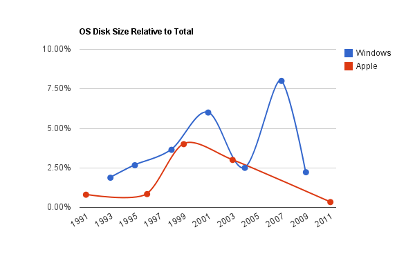

I recently wondered if the required disk space for common operating systems was stagnating. Yes, I must agree that I sometimes wonder about weird stuff.
But still, there used to be a time that installing the next generation of OS would require a new PC, not in the last place because it would fill up your entire hard disk. Going from 1 to multiple floppy disks for installation media, then CDs then DVDs. On the other hand, it doesn't feel like the footprint of Microsoft Windows, for example, has increased much, while HDD capacity still continues to grow exponentially.
{kind=link}
I drafted this graph displaying the disk space required for the OS relative to the total amount of disk space that was available in an average PC at that time. Beware, it's hardly a scientific comparison.

Please note that officially there is no difference for the required installation size of Windows XP vanilla and XP SP2, but in reality much more disk space is required, so I summed the required disk space and the Service pack and the Servicepackfiles folder.
For Windows XP vanilla (2001) and XP SP2 (2004) the relative required space decreases, because the required space only increased slightly but the available disk size quadrupled. About the same goes for Windows Vista (2007) and Windows 7 (2009). Between XP SP2 and Vista the required space increased eightfold.
I wouldn't make any predictions based on this graph. If you would, you might conclude that Windows will continue to alternate not growing in size and octuplying. Even though I have my reservations on the sanity of Microsoft developers, I doubt that is a goal they actively strive for.
For Mac OS over the last decade the required OS size has increased, but at a much smaller rate than the available space. This seems like a more realistic prospect. As long as the OS is not fully redesigned and only augmented, it is expected to grow somewhat in size (as features are added), although not exponentially, leaving more room for your SWTOR installation.
Other sources:
- Timeline of Microsoft Windows [Wikipedia]
- Installation requirements for Windows for Workgroups 3.11
- Installation requirements for Windows 95 [Microsoft KB]
- Installation requirements for Windows 98 [Microsoft KB]
- Installation requirements for Windows XP
- Installation requirements for Windows Vista [Microsoft KB]
- Installation requirements for Windows 7 [Microsoft KB]
- Description of System 7
- System requirements for System 7.0
- System requirements for System 7.5.5
- System requirements for Mac OS 10.3
- System requirements for Mac OS 10.7
Image map courtesy of image-maps.com.